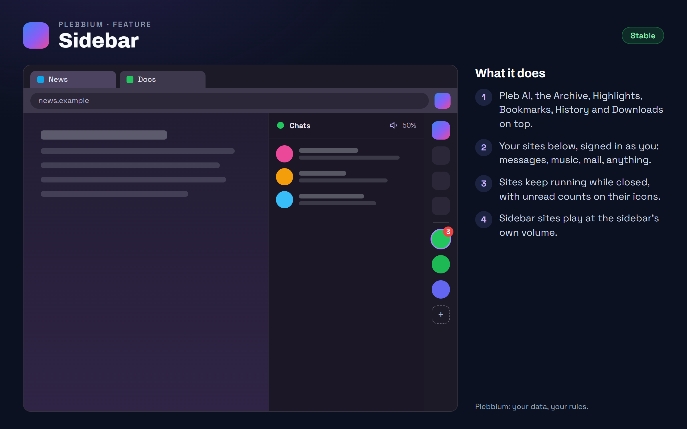

All features › Shipped › Sidebar
Sidebar
Stablesince 3605A strip of icons at the right edge of the window: Pleb's tools on top, the sites you pin below. Each opens docked beside the page, signed in with your normal logins, and sites keep running while closed.

How to use it
- Show or hide it: Alt+Shift+S, the button at its foot, the Pleb menu, or sidebar in the Everything bar.
- Add a site: the + in the strip, or right-click a tab › Add to sidebar.
- Right-click a site for its mobile layout, sound, blocker switch and more; drag icons to reorder them.
- Volume: sidebar sites play at the sidebar's level, 50% to start. The speaker in a site's panel turns it: scroll over it, or click it to give that site a volume of its own.
- Hidden but handy: let it peek in at the window's edge (a switch in the Pleb menu).
When it arrived
156.0.8078.360518 Oct 2026 · Beta and Stable
The sidebar: Pleb's tools and your own sites, docked beside the page.
156.0.8078.360619 Oct 2026 · Beta and Stable
Each sidebar site has the blocker's switch in its right-click menu.
156.0.8078.3610Beta 20 Oct 2026 · Stable 22 Oct 2026 (3612)
The sidebar's own volume, or a site's own.
Why it works this way
Real pages, not frames
A sidebar site is a page of its own, like a tab, never a frame inside another page: sites refuse to be framed, and a framed page wouldn't have your logins, permission prompts or dialogs.
Phone-sized by default
Sites open in their phone layout, which fits a narrow panel, unless they send phones to an app store; those open as they do on a computer.
Volume in the engine
The sidebar's volume works on every site and in every player because the browser turns the sound down itself, without the page knowing.